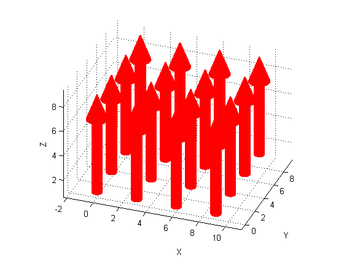
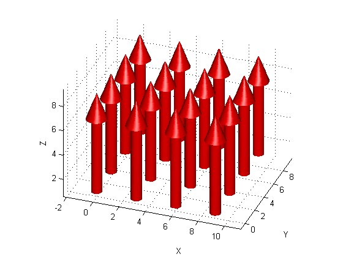
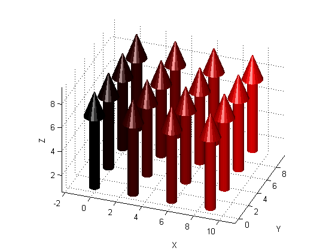
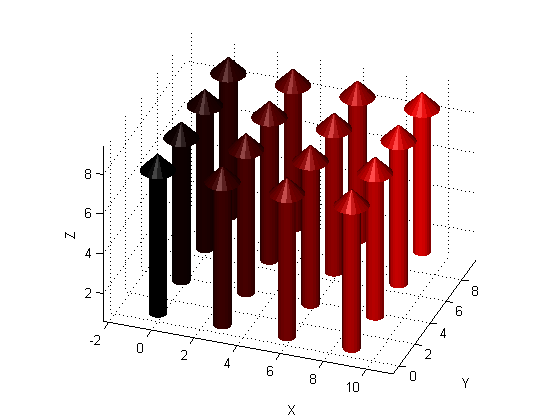
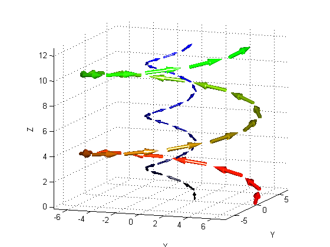

[X, Y] = meshgrid(0:3:9, 0:3:9);
Z = ones(size(X));
U = zeros(size(X));
V = U;
W = ones(size(X))*8;
posArray = [X(:),Y(:),Z(:)];
magnitudeArray = [U(:),V(:),W(:)];
quiverHandle = quiver3D(posArray, magnitudeArray, 'r');
hold on;
axis equal;
grid on;
xlabel('X'); ylabel('Y'); zlabel('Z');
view(20,30);
 lighting phong; camlight head;
numArrows = size(posArray,1);
arrowColors = zeros(numArrows, 3);
Rstream = (0:1/(numArrows-1):1)';
arrowColors(:,1) = Rstream;
delete(quiverHandle);
colorQuiverHandle = quiver3D(posArray, magnitudeArray, arrowColors);
 delete(colorQuiverHandle);
colorQuiverHandle = quiver3D(posArray, magnitudeArray, arrowColors, 0.9);
 radius = 7; height = 1; numRotations = 2; numPoints = 25; arrowScale = 0.8;
[posArray1, magnitudeArray1] = helix(radius, height, numRotations, numPoints, arrowScale);
arrowColors1 = zeros(numPoints, 3);
BlackToWhite = (0:1/(numPoints-1):1);
WhiteToBlack = (1:-1/(numPoints-1):0);
arrowColors1(:,1) = WhiteToBlack';
arrowColors1(:,2) = BlackToWhite';
radius = 2; height = 0.66; numRotations = 3;
[posArray2, magnitudeArray2] = helix(radius, height, numRotations, numPoints, arrowScale);
arrowColors2 = zeros(numPoints, 3);
arrowColors2(:,3) = BlackToWhite';
delete(colorQuiverHandle);
quiver3D(posArray1, magnitudeArray1, arrowColors1, 0.6);
quiver3D(posArray2, magnitudeArray2, arrowColors2, 0.6);
axis equal;
grid on;
xlabel('X'); ylabel('Y'); zlabel('Z');
view(20,10);
axis tight;
camlight head;
lighting phong;
 Author: Shawn Arseneau
Created: September 15, 2006